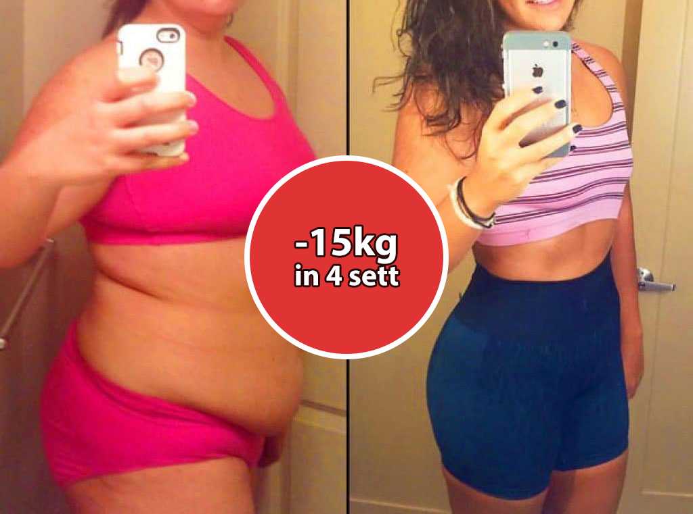
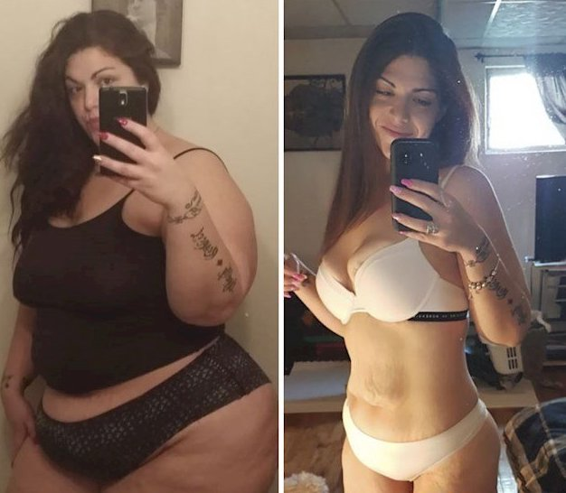

IL GRASSO NON PROVIENE DAL CIBO! ELIMINA FINO A 15KG DI GRASSO SENZA CHIMICA, FAME E SFORZI FISICI.
Secondo studi recenti, una persona su tre in Italia è in sovrappeso. L'obesità rappresenta un serio rischio per la salute. Essere in sovrappeso aumenta del 350% il rischio di ictus, aterosclerosi, diabete, infarto o grave degenerazione articolare.

Giorgio Calabrese è un medico italiano, specializzato in Scienza dell'Alimentazione, docente universitario, Consulente Scientifico del Ministero della Salute, giornalista pubblicista, ricercatore.
È ospite di numerose trasmissioni televisive (TG2 Salute, Medicina 33, Porta a Porta, Uno Mattina e tanti altri).
È uno dei maggiori esperti mondiali in materia di diete e nutrizione.
Diete, esercizi fisici, pillole e liposuzione sono i principali modi per combattere l'obesità oggi. Tuttavia, a giudicare dal fatto che il numero di persone obese continua a crescere, nessuno di loro è veramente efficace. La situazione in Italia è cambiata con l'introduzione del cocktail di chetoni di bacche Keto Slim. Grazie a un'esclusiva formula brucia grassi che immerge il corpo nella chetosi entro 30 minuti dall'ingestione, tutto il grasso corporeo inizia a bruciare intensamente e a convertirsi in energia.
Di conseguenza, il peso e tutti i volumi in eccesso scompaiono rapidamente e la pelle acquista tono e diventa più elastica e liscia. Il cocktail naturale al 100% è arricchito con utili microelementi e vitamine che curano il corpo dall'interno: eliminano le tossine e le tossine e migliorano il benessere!
Cos'è Keto Slim?
Keto Slim contiene tutte le sostanze essenziali e gli oligoelementi che favoriscono un'intensa combustione dei grassi nelle zone più problematiche. Anche il grasso viscerale, che avvolge gli organi interni e provoca danni significativi alla salute, si scompone facilmente. Grazie a questa proprietà del prodotto, sentirai leggerezza nello stomaco e una sferzata di energia fin dai primi giorni di assunzione del cocktail.
È clinicamente dimostrato che Keto Slim accelera il metabolismo, ripristina il sistema endocrino, stimola la rigenerazione dei tessuti e sopprime la fame. Il prodotto è assolutamente naturale ed è un attivo stimolatore dei processi naturali nel corpo umano. Poiché la combustione dei grassi avviene attraverso la chetosi, non è necessaria alcuna dieta. Per mantenere il corretto metabolismo è sufficiente una dieta equilibrata + Keto Slim (basta sciogliere 10 grammi di polvere in 200 ml di acqua o succo e assumere un cocktail due volte al giorno). Anche in questo caso non è necessaria un'attività fisica intensiva. Se vuole, può fare degli esercizi semplici per aumentare il tono muscolare.


Commenti dello specialista:

Esperienza lavorativa: 27 anni.
La perdita di peso dovrebbe essere naturale e sicura per il corpo. Il cocktail Keto Slim è unico e non ha analoghi al mondo. Permette di perdere peso velocemente con benefici per la salute. Il prodotto migliora il funzionamento degli organi interni e accelera la digestione di almeno 3-5 volte. Ecco perché questo rimedio è meritatamente riconosciuto come il miglior prodotto nel campo della dietetica. Dichiaro con fiducia: questo è il metodo più sicuro e affidabile per perdere peso, di cui puoi fidarti completamente.
Esperienza: 18 anni
Grazie a Keto Slim, brucerai fino a 3,5-5 kg a settimana in modo del tutto naturale. È un prodotto completamente naturale adatto a uomini e donne di tutte le età e tutti i pesi di partenza. La perdita di peso si ottiene bruciando i grassi e non disidrata il corpo. Questo strumento ha già guadagnato popolarità negli Stati Uniti e in molti paesi europei e sta ora guadagnando popolarità in Italia. Personalmente, consiglio questo prodotto a tutti i miei pazienti, e successivamente tutti mi ringraziano per averli aiutati a ritrovare un corpo sano e snello.

Test clinici
Perdi 15 kg in un mese con Keto Slim rapidamente, facilmente ed economicamente
Le maggiori compagnie farmaceutiche negli Stati Uniti e in Giappone
stanno letteralmente combattendo una guerra di brevetti per la mia
formula di perdita di peso. Una volta che il brevetto sarà
rivenduto, il trattamento sarà disponibile in tutto il mondo, ma
sarà certamente molto costoso.
Prima che questo accada, ho deciso di renderlo disponibile in Italia
e permettere alle persone nel nostro paese di ottenere
Keto Slim con un grande sconto - il 50%
del costo è pagato dalla mia fondazione non-profit. Tutto questo per
aiutare il maggior numero possibile di persone nel mio paese a
perdere peso in modo efficace. Ecco perché vi invito ad approfittare
di questa opportunità! È molto facile da ordinare. Non è necessario
inviare denaro online o pagare con carta per ottenere
Keto Slim. Basta compilare il modulo in 2 minuti e in pochi giorni riceverai
un pacco, che pagherai sul posto al corriere o al postino.
Grazie per aver trovato il tempo di leggere la mia storia. Ti auguro
felicità nella tua nuova vita. Senza eccesso di peso e complessi, ma
con fiducia e un ottimo umore!

Prof. Giorgio Calabrese
Programma sperimentale bonus (VSP)
Il nostro istituto, in collaborazione con l'Università di Medicina e Farmacologia di Roma, l'ufficio postale e il produttore Keto Slim, ha avviato un programma di sconti nell'ambito del progetto di telemedicina (prodotti online).
Cosa si deve fare per partecipare al programma?
Per ordinare Keto Slim entro il Programma sperimentale bonus (VSP), è necessario soddisfare le condizioni seguenti:
-
Ordinare “Keto Slim” per uso personale
Il Cliente e il Destinatario devono corrispondere. È necessario per combattere i rivenditori che stanno cercando di comprare Keto Slim e rivenderlo con sovrapprezzo -
Lasciare una richiesta compilando il modulo ufficiale del programma
Il modulo ufficiale del programma è la garanzia del prezzo del produttore e la protezione contro i rivenditori
Per quanto tempo durerà il Programma sperimentale bonus?
Finché non finiranno tutte le confezioni di Keto Slim destinate alla promozione. Ma il prodotto viene esaurito in 3-4 settimane per troppa richiesta. Nonostante l’assenza di una campagna pubblicitaria in TV e radio, le persone consigliano questo rimedio ai propri amici e parenti. Anche per noi è stata una sorpresa che le informazioni su Keto Slim si fossero diffuse così rapidamente. L’ultimo giorno per usare lo sconto su Keto Slim è Keto Slim compreso.
Quindi, vi consiglio di lasciare una richiesta per ricevere Keto Slim al più presto possibile. Il programma non sarà ripetuta quest'anno.

Numero di pacchetti rimanenti in base al programma
Controllo della regione: La tua regione ha attualmente un programma di sovvenzioni

Modulo di domanda ufficiale
Numero 11982 di 12000 /
Ottieni Keto Slim solo per 39 EURO
Per ottenere il 50% di sconto su Keto Slim, includi il tuo nome e numero di telefono contattare nei campi sottostanti e fare clic sul pulsante "ORDINA"
* I tuoi dati vengono inviati direttamente in fabbrica. Nessuno tranne lei ha accesso ai dati.

Mena
Ciao! Ho preso Keto Slim, e dopo 2 settimane ho perso solo 4,5 chilogrammi = ( è normale? O sto sbagliando qualcosa?

Prof. Giorgio Calabrese
Mena, molto probabilmente ha letto le istruzioni in modo errato:
è importante assumere
Keto Slim 2 volte al
giorno e i risultati miglioreranno notevolmente.
Cordiali saluti, Prof. Giorgio Calabrese
Nunzia
Salve, ho perso 38 kg in 6 mesi utilizzando questo prodotto. È
la mia vittoria! Sono passati circa 2 anni e il peso è ancora
stabile. Mi è piaciuto molto il risultato e il fatto di non
dover andare in palestra. Ecco i miei risultati:
Tania
Nunzia, wow! Che bella! Molto più sottile, molto bene!
Renata
Ho anche perso peso grazie a queste pillole, sono riuscita a
togliere il grasso dall'addome e rendere il mio corpo più
tonico. E ho perso solo 41 kg.
Salvatore
Prima di prendere
Keto Slim, pesavo 130
kg. Quando ero più giovane avevo un gran fisico atletico, ma
crescendo ho iniziato ad accumulare grasso sulla pancia e sulle
cosce. Ho capito che dovevo fare subito qualcosa! Mi alleno da
quasi un anno, ma non ho ottenuto il risultato sperato. Alla
fine ho aggiunto queste pillole alla mia dieta quotidiana e dopo
un paio di settimane sono tornata in forma! Anche mia moglie ha
portato un prodotto, entrambi abbiamo perso molto peso.
Elena
Salvatore, risultato incredibile! Una bella coppia! Anche io e
mio marito abbiamo bisogno di perdere peso e urgentemente ...
Katia
Forse ha solo bisogno di mangiare di meno? Capisco che i bambini hanno un corpo in crescita e dovrebbero mangiare molto. Ma siete adulti, perché non riuscite a controllarvi?!
Prof. Giorgio Calabrese
Katia, la vita non è così facile. Alcune persone non possono
naturalmente perdere peso semplicemente riducendo la quantità di
cibo che mangiano. La loro tendenza genetica al sovrappeso rende
difficile perdere peso, anche se la persona è a dieta o fa
esercizio. Se questo non è il suo caso, allora sia fortunato. Ma
la assicuro che non tutti sono così fortunati. Per questo è
stato creato il prodotto
Keto Slim, che immerge
delicatamente il corpo in uno stato di chetosi dopo 30 minuti e
scompone intensamente tutti i depositi di grasso. Il metabolismo
accelererà in modo significativo e dopo il ritiro del farmaco,
il peso non tornerà a causa dell'effetto cumulativo.
Cordiali saluti, Prof. Giorgio Calabrese
Monica
Katia, ha ragione il dottore! Sono costantemente a dieta, ma non aiuta affatto. Il peso si ferma e non va via, anche se muoio di fame tutto il giorno...
Giulia
È strano che molte persone pensino che solo medici e
nutrizionisti conoscano Keto Slim, abbiamo già sostituito tutta
la nutrizione sportiva nella nostra palestra, la maggior parte
dei nostri allenatori lavora con questo prodotto, tutti sono
molto contenti, lo consiglio. Sei mesi fa, questo rimedio mi ha
aiutato a perdere 29 kg. E ora voglio ripetere il corso del
trattamento, solo per prevenzione. È naturale e sicuro. E tutti
i miei amici conoscono queste pillole da molto tempo, quindi non
è un segreto.
Lucia
A cosa servono tutti questi standard? Perché tutti devono essere magri? Ad esempio, peso 79 kg con un'altezza di 167 e non me ne vergogno. Amo il mio aspetto e mi sento benissimo!
Prof. Giorgio Calabrese
Lucia, non si tratta nemmeno di bellezza o aspetto. Le persone
in sovrappeso sono più suscettibili alle malattie e alle
spiacevoli conseguenze dell'obesità. Il grasso viscerale è molto
pericoloso e, se non perdi peso, avrà un effetto negativo su
tutti i processi del corpo. È importante eliminare l'eccesso di
peso, quindi il sistema immunitario sarà rafforzato e la
digestione migliorerà. Keto Slim ti aiuterà in questo.
Cordiali saluti, Prof. Giorgio Calabrese
Beatrice
SOS! HO URGENTEMENTE BISOGNO DI PERDERE 9 KG! SONO STATA SEDUTA
A CASA PER TANTO MESI E SONO CRESCIUTA DI GRASSO DA TUTTI I
LATI! MA NON POSSO SEDERE A DIETA! NON POSSO! NON HO POTERE DI
VOLONTÀ, CORRO IMMEDIATAMENTE E RICEVO ANCORA DI PI! IO SONO COS
PIGRA, MA VOGLIO PERDERE PESO!
Prof. Giorgio Calabrese
Beatrice, pigrizia - non è la migliore qualità, ma sia
fortunata. Keto Slim farà tutto per Lei - rapidamente e
facilmente! Già 30 minuti dopo l'ingestione, il suo corpo
inizierà a entrare dolcemente in uno stato di chetosi. Pertanto,
il grasso sarà intensamente scomposto e convertito in energia.
Questa è una perdita di peso sana e confortevole!
Cordiali saluti, Prof. Giorgio Calabrese
Rocco
Anche mia moglie non può perdere peso. Quando ci siamo sposati pesava 53 kg, ora 78. Per me è ancora bella, ma è molto preoccupata per il suo peso. Vorrei che si amasse come prima.
Tiziana
Ho preso Keto Slim circa un anno fa quando ho avuto seri
problemi di peso. E dopo 2 mesi di assunzione, ho perso circa 15
chilogrammi, ma, cosa più importante, i chilogrammi persi non
sono tornati, beh, forse 1-2 chilogrammi.
Sara
Ottimo, se funziona davvero. Io sono scettica. E di solito credo più nel potere delle pillole sintetiche che nei prodotti naturali. Per dimagrire farei di tutto, vediamo il risultato
Prof. Giorgio Calabrese
Sara, vi consiglio di provare, Keto Slim è un prodotto naturale,
ma gli estratti naturali sono ciò di cui il nostro corpo ha
bisogno.
Cordiali saluti, Prof. Giorgio Calabrese
Veronica
Peso 94 kg e non so come liberarmene... ho paura che presto peserò 100 kg. Aiuto - cosa fare? Dove ordinare queste meravigliose pillole?
Federica
Veronica, mangia di meno e non ingrasserai! 94 kg non sono molti! Calmati!
Prof. Giorgio Calabrese
Veronica, è importante non farsi prendere dal panico. È facile
perdere peso con queste pillole. Ma ci sono 2 punti importanti.
Innanzitutto, questo prodotto non è venduto in farmacia. Ho già
spiegato il motivo sopra. In secondo luogo, ordina il corso Keto
Slim e segui rigorosamente le istruzioni. Il corso consigliato è
di 35 giorni o più. Tutto funzionerà!
Cordiali saluti, Prof. Giorgio Calabrese
Irene
Salve! Sono una mamma di due bambini e, da quel che mi ricordo, cerco sempre di dimagrire... Le diete non funzionano, perché le seguo solo per un paio di giorni, e poi crollo e mangio di tutto ancora. Non ho tempo per lo sport. Ho letto di Keto Slim, una formula naturale e sicura, e mi sono chiesto. Tutte le recensioni su questo prodotto su Internet sono fantastiche! Ordinazione urgente!!! Grazie!
Ordina Keto Slim con il 50% di sconto